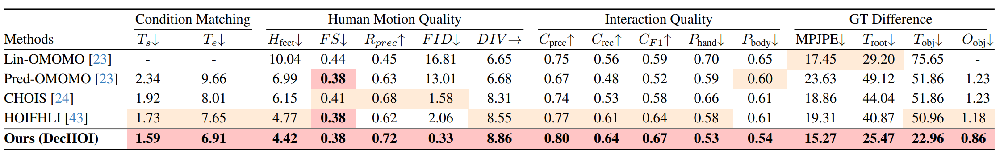

Abstract
Synthesizing realistic human-object interaction (HOI) is essential for 3D computer vision and robotics, underpinning animation and embodied control. Existing approaches often require manually specified intermediate waypoints and place all optimization objectives on a single network, which increases complexity, reduces flexibility, and leads to errors such as unsynchronized human and object motion or penetration. To address these issues, we propose Decoupled Generative Modeling for Human-Object Interaction Synthesis (DecHOI), which separates path planning and action synthesis. A trajectory generator first produces human and object trajectories without prescribed waypoints, and an action generator conditions on these paths to synthesize detailed motions. To further improve contact realism, we employ adversarial training with a discriminator that focuses on the dynamics of distal joints. The framework also models a moving counterpart and supports responsive dynamic long sequence planning while preserving plan consistency. Across two benchmarks, FullBodyManipulation and 3D-FUTURE, DecHOI surpasses prior methods on most quantitative metrics and qualitative evaluations, and a perceptual studies likewise prefer our results.
Key Contributions
- DecHOI decouples trajectory planning from fine grained action synthesis, reducing optimization difficulty and removing the need for manual waypoints.
- Adversarial training with a compact discriminator improves coordination between distal joints and the object and reduces interpenetration.
- A long-horizon dynamic planner enables responsive updates to moving counterparts and supports scene aware interaction.
- Across multiple benchmarks DecHOI achieves state of the art realism accuracy and diversity and consistently outperforms prior methods.
Overview

Video Results
DynaPlan
*For visualization, we render the obstacle (green) using a pre-trained action generation model, which can introduce slight jitter in the obstacle.
Quantitative Results

Table 1. Quantitative comparison on the FullBodyManipulation dataset with CHOIS, HOIFHLI, and OMOMO variants (Lin-OMOMO and Pred-OMOMO) across four categories of evaluation metrics. Arrows indicate direction: (↑) means higher is better, (↓) means lower is better, and (→) means closer to the real data value is better. The real-data DIV reference is 9.02.

Table 2. Quantitative results on the 3D-FUTURE dataset. DecHOI achieves better trajectory accuracy, motion stability, and contact realism than CHOIS and OMOMO baselines.
BibTeX
@misc{jung2025decoupledgenerativemodelinghumanobject,
title = {Decoupled Generative Modeling for Human-Object Interaction Synthesis},
author = {Hwanhee Jung and Seunggwan Lee and Jeongyoon Yoon and SeungHyeon Kim and Giljoo Nam and Qixing Huang and Sangpil Kim},
year = {2025},
eprint = {2512.19049},
archivePrefix = {arXiv},
primaryClass = {cs.CV},
url = {https://arxiv.org/abs/2512.19049}
}